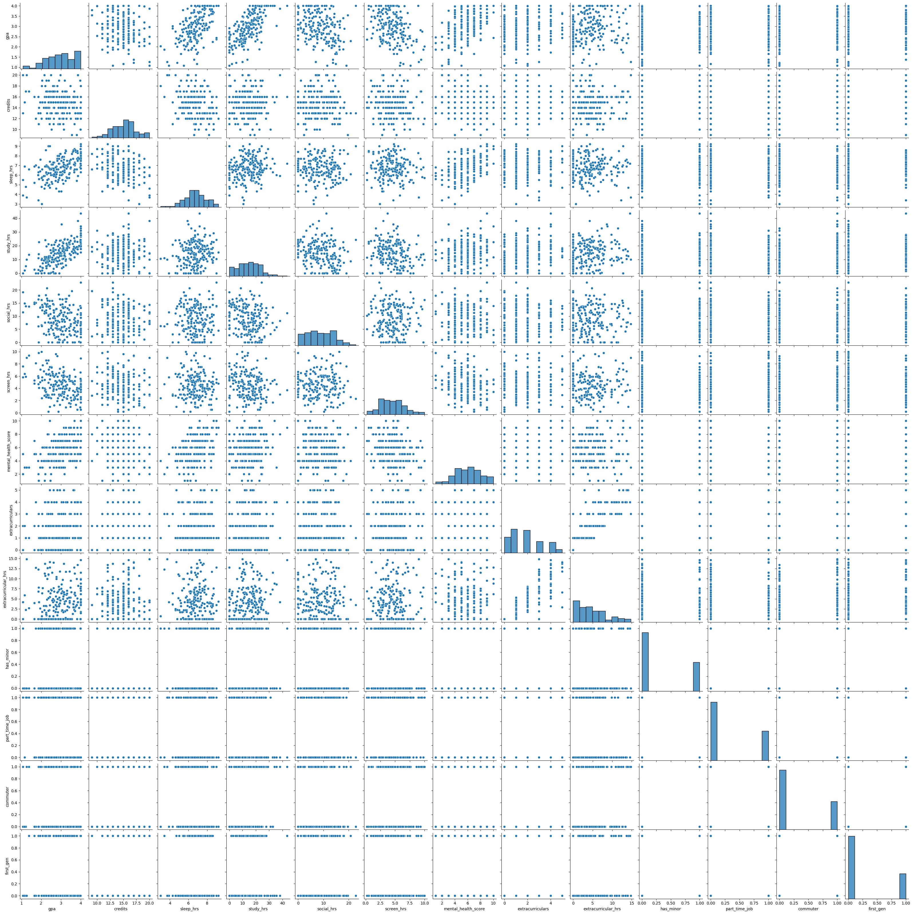
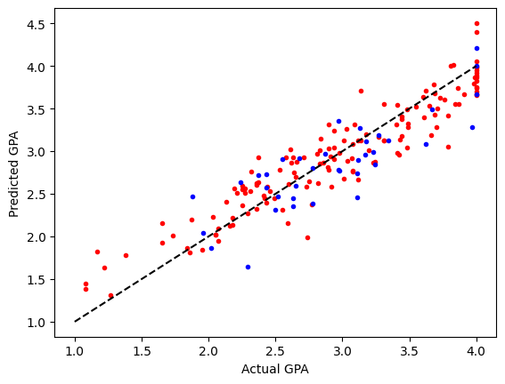

4.4. Example: West Claude University#
Below is a fictional survey of fictional students from the fictional West Claude University. To reiterate, this is synthetic data produced using Claude.
import numpy as np
import matplotlib.pyplot as plt
import seaborn as sns
import pandas as pd
wcu_df = pd.read_csv('https://raw.githubusercontent.com/GettysburgDataScience/datasets/refs/heads/main/westclaudeuniversity_survey.csv')
wcu_df.head()
| student_id | gpa | year | major | credits | sleep_hrs | study_hrs | social_hrs | screen_hrs | mental_health_score | extracurriculars | extracurricular_hrs | has_minor | part_time_job | commuter | first_gen | |
|---|---|---|---|---|---|---|---|---|---|---|---|---|---|---|---|---|
| 0 | WU0001 | 3.61 | Senior | Other | 15 | 7.7 | 17.1 | 0.0 | 3.6 | 4.0 | 1 | 3.8 | 0 | 0 | 0 | 0 |
| 1 | WU0002 | 2.91 | Junior | English | 16 | 7.2 | 9.4 | 7.8 | 2.8 | 5.0 | 2 | 7.3 | 1 | 0 | 0 | 0 |
| 2 | WU0003 | 3.42 | Junior | Biology | 16 | 6.2 | 21.0 | 4.4 | 5.6 | 4.0 | 0 | 0.0 | 0 | 0 | 0 | 0 |
| 3 | WU0004 | 4.00 | Junior | Other | 16 | 7.7 | 32.6 | 7.4 | 5.2 | 6.0 | 2 | 7.3 | 0 | 0 | 0 | 0 |
| 4 | WU0005 | 2.65 | Sophomore | Biology | 18 | 7.3 | 0.0 | 2.7 | 1.2 | 8.0 | 1 | 2.0 | 0 | 0 | 1 | 0 |
Exploratory Data Analysis
Data Cleaning
Modeling
Feature Engineering/Feature Selection
train test split
feature scaling
model fit and selection
model assessment
Intepretation
## EDA
wcu_df.info() # data types and missing data
<class 'pandas.core.frame.DataFrame'>
RangeIndex: 200 entries, 0 to 199
Data columns (total 16 columns):
# Column Non-Null Count Dtype
--- ------ -------------- -----
0 student_id 200 non-null object
1 gpa 200 non-null float64
2 year 200 non-null object
3 major 200 non-null object
4 credits 200 non-null int64
5 sleep_hrs 195 non-null float64
6 study_hrs 200 non-null float64
7 social_hrs 197 non-null float64
8 screen_hrs 193 non-null float64
9 mental_health_score 197 non-null float64
10 extracurriculars 200 non-null int64
11 extracurricular_hrs 200 non-null float64
12 has_minor 200 non-null int64
13 part_time_job 200 non-null int64
14 commuter 200 non-null int64
15 first_gen 200 non-null int64
dtypes: float64(7), int64(6), object(3)
memory usage: 25.1+ KB
wcu_df.describe() # descriptive stats
| gpa | credits | sleep_hrs | study_hrs | social_hrs | screen_hrs | mental_health_score | extracurriculars | extracurricular_hrs | has_minor | part_time_job | commuter | first_gen | |
|---|---|---|---|---|---|---|---|---|---|---|---|---|---|
| count | 200.000000 | 200.000000 | 195.000000 | 200.000000 | 197.000000 | 193.000000 | 197.000000 | 200.000000 | 200.000000 | 200.000000 | 200.000000 | 200.000000 | 200.000000 |
| mean | 2.956450 | 14.705000 | 6.700000 | 14.745500 | 8.727411 | 4.521244 | 5.609137 | 1.860000 | 4.660000 | 0.330000 | 0.335000 | 0.320000 | 0.285000 |
| std | 0.704551 | 2.265754 | 1.146038 | 8.404341 | 5.182000 | 2.014095 | 1.967729 | 1.396478 | 3.900921 | 0.471393 | 0.473175 | 0.467647 | 0.452547 |
| min | 1.080000 | 9.000000 | 3.000000 | 0.000000 | 0.000000 | 0.200000 | 1.000000 | 0.000000 | 0.000000 | 0.000000 | 0.000000 | 0.000000 | 0.000000 |
| 25% | 2.430000 | 13.000000 | 6.000000 | 9.250000 | 4.800000 | 3.000000 | 4.000000 | 1.000000 | 1.700000 | 0.000000 | 0.000000 | 0.000000 | 0.000000 |
| 50% | 2.975000 | 15.000000 | 6.700000 | 14.750000 | 8.300000 | 4.500000 | 6.000000 | 2.000000 | 4.100000 | 0.000000 | 0.000000 | 0.000000 | 0.000000 |
| 75% | 3.490000 | 16.000000 | 7.500000 | 20.550000 | 13.100000 | 5.900000 | 7.000000 | 3.000000 | 6.900000 | 1.000000 | 1.000000 | 1.000000 | 1.000000 |
| max | 4.000000 | 20.000000 | 9.200000 | 43.500000 | 22.800000 | 10.000000 | 10.000000 | 5.000000 | 14.800000 | 1.000000 | 1.000000 | 1.000000 | 1.000000 |
sns.pairplot(wcu_df)
plt.show()

wcu_df.drop(columns = 'student_id', inplace = True)
wcu_df['major'].unique()
majors_df = pd.get_dummies(wcu_df['major'], dtype = int)
wcu_df = wcu_df.drop(columns = 'major').join(majors_df)
wcu_df.replace({'Freshman':1,
'Sophomore': 2,
'Junior': 3,
'Senior':4},
inplace = True)
wcu_df
| gpa | year | credits | sleep_hrs | study_hrs | social_hrs | screen_hrs | mental_health_score | extracurriculars | extracurricular_hrs | ... | part_time_job | commuter | first_gen | Biology | CS | Economics | English | Other | Psychology | Undecided | |
|---|---|---|---|---|---|---|---|---|---|---|---|---|---|---|---|---|---|---|---|---|---|
| 0 | 3.61 | 4 | 15 | 7.7 | 17.1 | 0.0 | 3.6 | 4.0 | 1 | 3.8 | ... | 0 | 0 | 0 | 0 | 0 | 0 | 0 | 1 | 0 | 0 |
| 1 | 2.91 | 3 | 16 | 7.2 | 9.4 | 7.8 | 2.8 | 5.0 | 2 | 7.3 | ... | 0 | 0 | 0 | 0 | 0 | 0 | 1 | 0 | 0 | 0 |
| 2 | 3.42 | 3 | 16 | 6.2 | 21.0 | 4.4 | 5.6 | 4.0 | 0 | 0.0 | ... | 0 | 0 | 0 | 1 | 0 | 0 | 0 | 0 | 0 | 0 |
| 3 | 4.00 | 3 | 16 | 7.7 | 32.6 | 7.4 | 5.2 | 6.0 | 2 | 7.3 | ... | 0 | 0 | 0 | 0 | 0 | 0 | 0 | 1 | 0 | 0 |
| 4 | 2.65 | 2 | 18 | 7.3 | 0.0 | 2.7 | 1.2 | 8.0 | 1 | 2.0 | ... | 0 | 1 | 0 | 1 | 0 | 0 | 0 | 0 | 0 | 0 |
| ... | ... | ... | ... | ... | ... | ... | ... | ... | ... | ... | ... | ... | ... | ... | ... | ... | ... | ... | ... | ... | ... |
| 195 | 2.78 | 1 | 16 | 6.6 | 4.7 | 5.4 | 5.0 | 4.0 | 2 | 4.2 | ... | 0 | 0 | 0 | 0 | 0 | 1 | 0 | 0 | 0 | 0 |
| 196 | 1.95 | 1 | 15 | 6.4 | 4.9 | 13.2 | 5.0 | 3.0 | 1 | 2.6 | ... | 0 | 1 | 1 | 0 | 0 | 0 | 1 | 0 | 0 | 0 |
| 197 | 3.99 | 3 | 10 | 8.7 | 22.6 | 6.5 | 6.6 | 5.0 | 2 | 7.6 | ... | 1 | 1 | 0 | 0 | 0 | 0 | 0 | 1 | 0 | 0 |
| 198 | 2.75 | 3 | 13 | 4.6 | 23.9 | 6.8 | 6.4 | 4.0 | 1 | 2.5 | ... | 0 | 1 | 0 | 0 | 0 | 0 | 0 | 0 | 1 | 0 |
| 199 | 2.97 | 3 | 14 | 8.2 | 14.9 | 4.7 | 4.0 | 5.0 | 0 | 0.0 | ... | 0 | 0 | 0 | 1 | 0 | 0 | 0 | 0 | 0 | 0 |
200 rows × 21 columns
wcu_df.dropna(inplace=True)
4.4.1. Modeling#
4.4.1.1. Finish Feature Engineering#
Make Polynomials
4.4.1.2. Model#
Compare LinearRegression, Lasso, Ridge, ElasticNet
target = 'gpa'
y = wcu_df[target]
X = wcu_df.drop(columns = target)
from sklearn.preprocessing import PolynomialFeatures
pf = PolynomialFeatures(degree = 2, include_bias = False)
Xpoly = pf.fit_transform(X)
feature_names = pf.get_feature_names_out()
4.4.2. Modeling for Real#
from sklearn.model_selection import train_test_split
from sklearn.preprocessing import StandardScaler
from sklearn.linear_model import LinearRegression, LassoCV, RidgeCV, ElasticNetCV
X_train, X_test, y_train, y_test = train_test_split(
Xpoly, y, test_size = 0.2)
scaler = StandardScaler()
Z_train = scaler.fit_transform(X_train)
Z_test = scaler.transform(X_test)
linreg = LinearRegression()
linreg.fit(Z_train, y_train)
LinearRegression()In a Jupyter environment, please rerun this cell to show the HTML representation or trust the notebook.
On GitHub, the HTML representation is unable to render, please try loading this page with nbviewer.org.
Parameters
| fit_intercept | True | |
| copy_X | True | |
| tol | 1e-06 | |
| n_jobs | None | |
| positive | False |
def display_coef(model, features):
idx = np.argsort(np.abs(model.coef_))[::-1]
for k, (f, c) in enumerate(zip(features[idx], model.coef_[idx]), start = 1):
print(f'{k:>3}.{f:<40}{c:+5.4f}')
#display_coef(linreg, feature_names)
4.4.2.1. Making Predictions and Assessing the Linear Regression Model#
from sklearn.metrics import r2_score
y_linreg_train = linreg.predict(Z_train)
y_linreg_test = linreg.predict(Z_test)
r2_linreg_train = r2_score(y_train, y_linreg_train)
r2_linreg_test = r2_score(y_test, y_linreg_test)
print(f'{r2_linreg_train=:0.2f}\n{r2_linreg_test=:0.2f}')
# OVER FITTING - great on train, much worse on test
r2_linreg_train=1.00
r2_linreg_test=-1.26
4.4.3. Let’s improve our model with Regularization#
alpha_test = np.logspace(-3, 3, 25)
ridge = RidgeCV(alphas = alpha_test)
ridge.fit(Z_train, y_train)
ridge.alpha_
np.float64(100.0)
lasso = LassoCV(alphas = alpha_test, max_iter = 15000)
lasso.fit(Z_train, y_train)
lasso.alpha_
np.float64(0.01778279410038923)
elastic = ElasticNetCV(l1_ratio = 0.5,
alphas = alpha_test,
max_iter = 15000)
elastic.fit(Z_train, y_train)
elastic.alpha_
np.float64(0.03162277660168379)
| model | Non-Zero | Above 0.1 |
| LinearRegression | 209 | 197 | | Ridge | 208 | 94 | | Lasso | 20 | 13 | | Elastic | 24 | 20 |
# display_coef(elastic, feature_names)
y_ridge_train = ridge.predict(Z_train)
y_ridge_test = ridge.predict(Z_test)
r2_ridge_train = r2_score(y_train, y_ridge_train)
r2_ridge_test = r2_score(y_test, y_ridge_test)
print(f'{r2_ridge_train=:0.2f}\n{r2_ridge_test=:0.2f}')
y_lasso_train = lasso.predict(Z_train)
y_lasso_test = lasso.predict(Z_test)
r2_lasso_train = r2_score(y_train, y_lasso_train)
r2_lasso_test = r2_score(y_test, y_lasso_test)
print(f'\n{r2_lasso_train=:0.2f}\n{r2_lasso_test=:0.2f}')
y_elastic_train = elastic.predict(Z_train)
y_elastic_test = elastic.predict(Z_test)
r2_elastic_train = r2_score(y_train, y_elastic_train)
r2_elastic_test = r2_score(y_test, y_elastic_test)
print(f'\n{r2_elastic_train=:0.2f}\n{r2_elastic_test=:0.2f}')
r2_ridge_train=0.87
r2_ridge_test=0.69
r2_lasso_train=0.87
r2_lasso_test=0.68
r2_elastic_train=0.87
r2_elastic_test=0.67
# display_coef(lasso, feature_names)
import matplotlib.pyplot as plt
plt.plot(y_train, y_lasso_train, 'r.')
plt.plot(y_test, y_lasso_test, 'b.')
plt.plot([1, 4], [1, 4], 'k--')
plt.xlabel('Actual GPA')
plt.ylabel('Predicted GPA')
plt.show()
